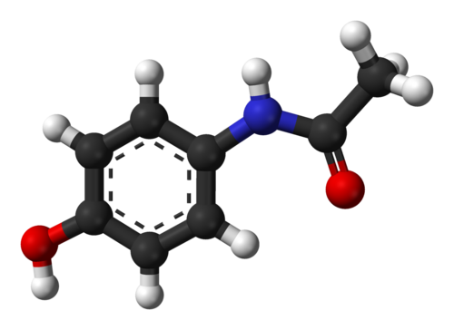
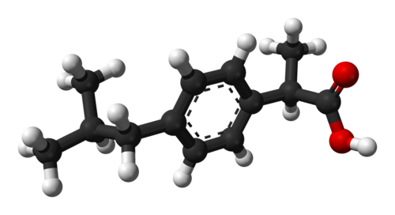
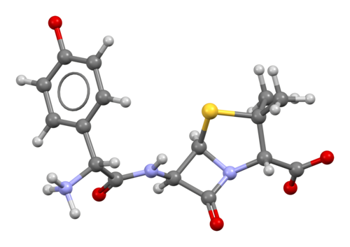

Parasetamol
Ateş düşürücü ve hafif-orta şiddette ağrı kesici olarak kullanılır.
Grip, soğuk algınlığı, baş ağrısı ve kas ağrılarında yaygındır.
Formları tablet, şurup ve damladır. Yüksek dozlarda karaciğer hasarına yol açabilir.

İbuprofen
Ağrı kesici ve iltihap önleyici (anti-inflamatuvar) etkisi vardır.
Diş ağrısı, adet sancısı, baş ağrısı ve kas ağrıları için tercih edilir.
Tablet, kapsül ve jel şeklinde bulunur. Mideyi tahriş edebilir, aç karnına alınmamalıdır
Benzodiazepines
Anksiyete (kaygı), panik atak, uykusuzluk ve kas gevşetici amaçlarla kullanılan bir ilaç grubudur.
Beyindeki sinir iletimini yavaşlatarak sakinleştirici etki gösterir.
Etkileri hızlı başlar ancak uzun süreli kullanımda bağımlılık riski bulunur.
Bu nedenle genellikle kısa süreli ve doktor kontrolünde kullanılır.
Örnek etken maddeler arasında diazepam, alprazolam ve lorazepam bulunur.
Escitalopram
Depresyon ve anksiyete bozukluklarının tedavisinde kullanılan bir antidepresandır.
SSRI (Selektif Serotonin Geri Alım İnhibitörü) grubuna aittir ve beyindeki serotonin düzeyini dengelemeye yardımcı olur.
Etkisi genellikle birkaç hafta içinde ortaya çıkar. Günlük ve düzenli kullanım gerektirir.
Başlangıçta mide bulantısı, baş ağrısı veya uyku düzeninde değişiklik görülebilir.

Aspirin
Ağrı kesici ve ateş düşürücü olarak kullanılan eski ve yaygın bir ilaçtır.
Düşük dozlarda kanın pıhtılaşmasını azaltıcı (kan sulandırıcı) etkisi bulunur
ve bazı kalp-damar hastalıklarında koruyucu amaçla kullanılır.
Tablet formundadır.
Çocuklarda bazı viral hastalıklarla birlikte kullanılması önerilmez ve mideyi tahriş edebilir

Amoksisilin
Penisilin grubuna ait bir antibiyotiktir.
Bakteriyel enfeksiyonların tedavisinde kullanılır; özellikle solunum yolu, idrar yolu ve kulak-burun-boğaz enfeksiyonlarında yaygındır.
Tablet, kapsül ve süspansiyon formları bulunur.
Viral hastalıklarda etkili değildir ve penisilin alerjisi olan kişilerde dikkatle kullanılır.

Dexametazon
Kortikosteroid (kortizon) grubunda yer alan güçlü bir ilaçtır.
İltihap, alerjik reaksiyonlar, bağışıklık sistemiyle ilgili bazı hastalıklar ve beyin ödemi gibi durumlarda kullanılır.
Tablet ve enjeksiyon formları vardır.
Uzun süreli kullanımda bağışıklık sistemi ve kemik yapısı üzerinde etkiler görülebilir.

Metilfenidat
Merkezi sinir sistemi üzerinde etkili bir ilaçtır ve genellikle dikkat eksikliği ve hiperaktivite bozukluğu (DEHB) tedavisinde kullanılır.
Beyindeki dikkat ve odaklanmayla ilişkili kimyasal maddelerin dengesini etkiler.
Tablet ve uzatılmış salımlı formları bulunur.
Reçeteyle kullanılır ve doktor takibi gerektirir